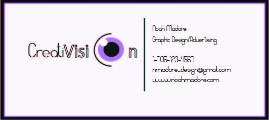
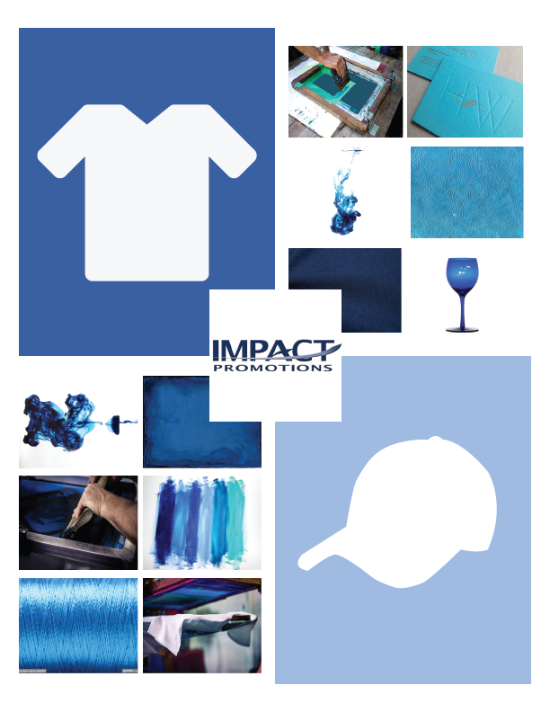
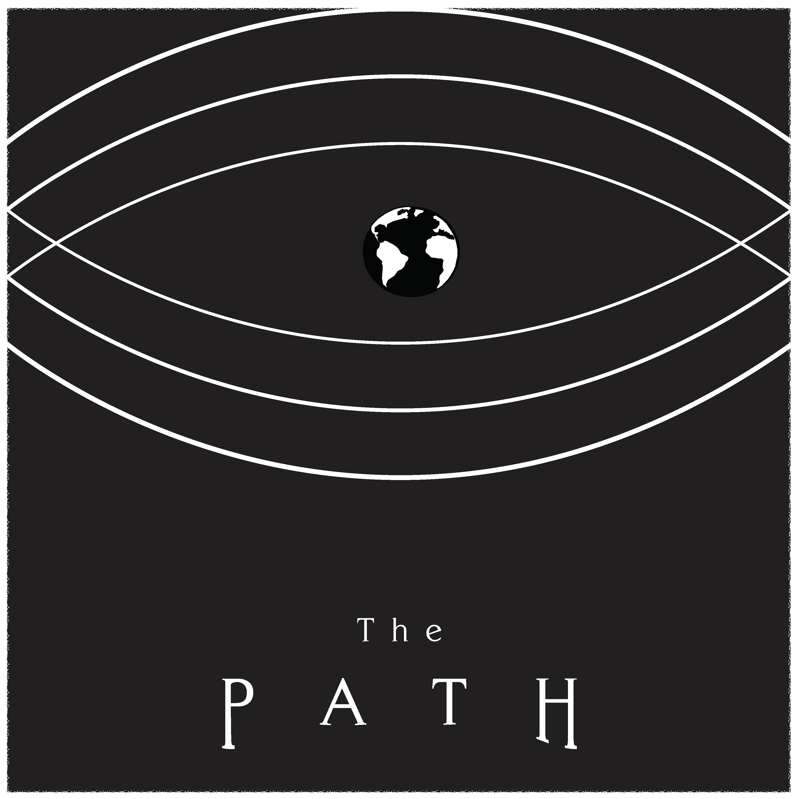
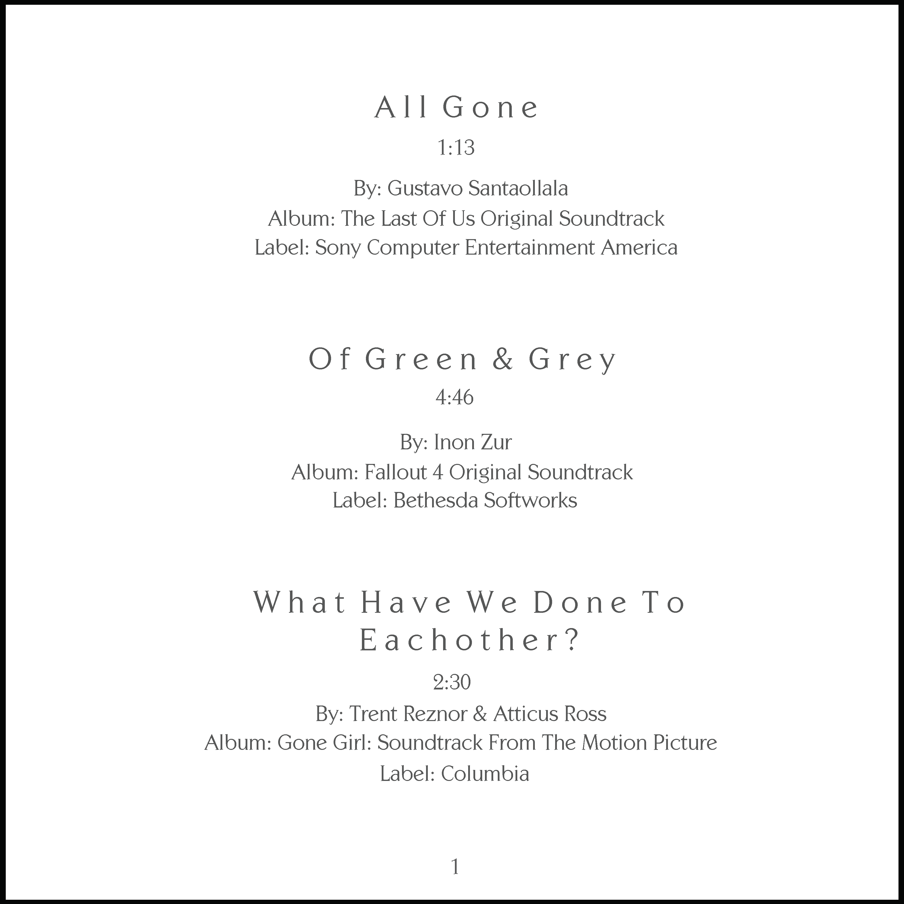
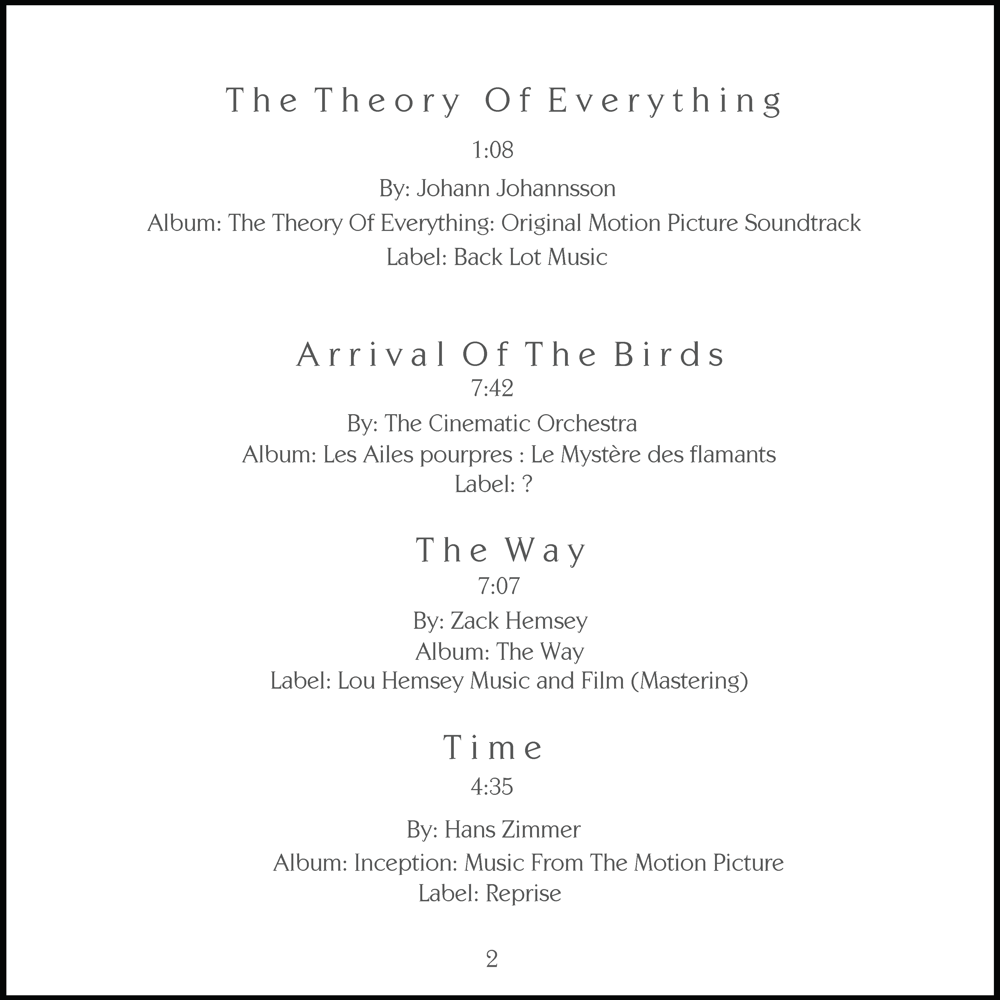
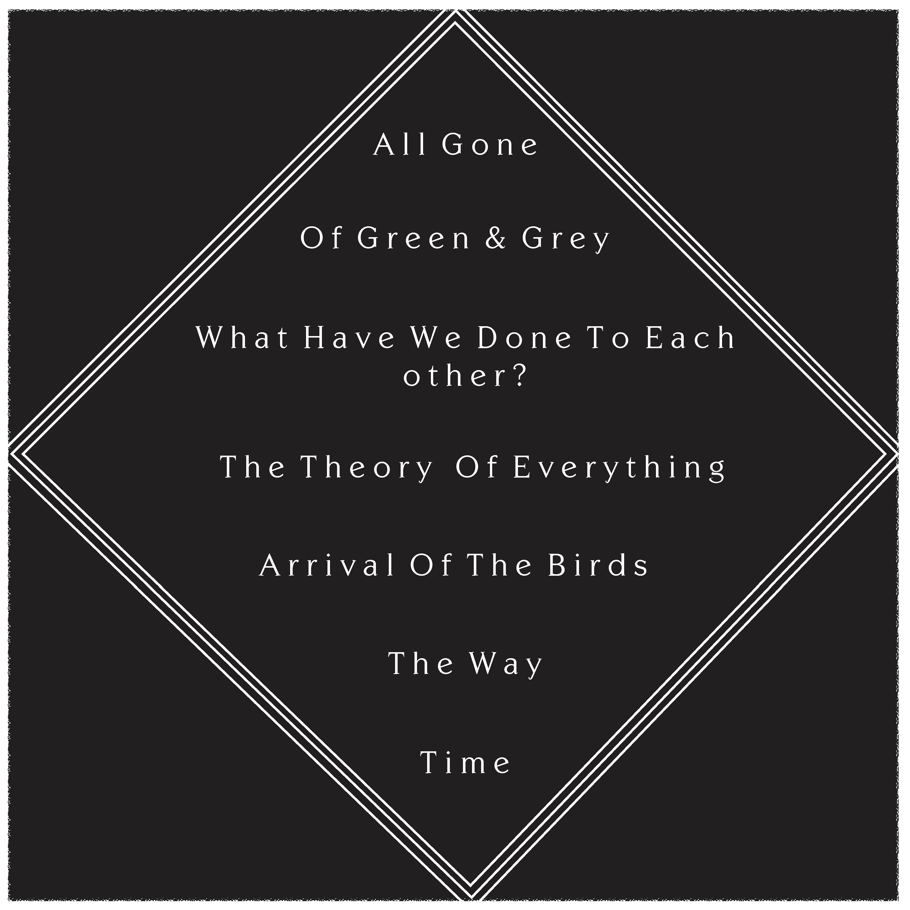
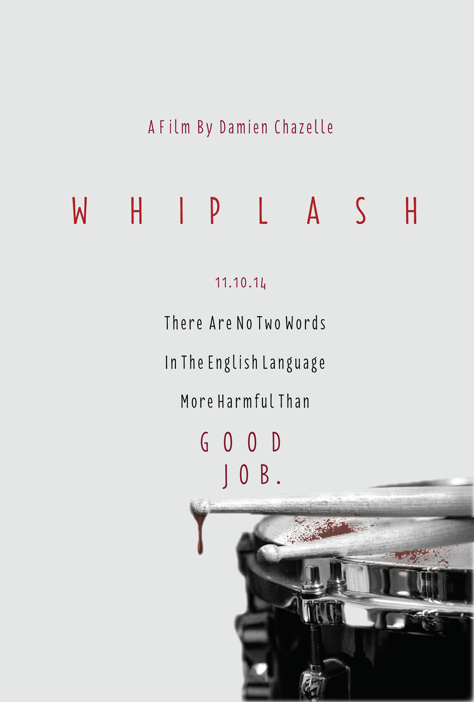

Graphic Design (2014-2016)

This was a business card I designed to promote a fictional business ran by myself. The focus of this project was to design a card that not only provided someone with basic contact information, but to also use subtle imagery and typography elements to express what it was the business was about.

During second year, students were placed into teams and assigned a real client in the local industry and were tasked with developing a guidebook intended to be used as a guideline to improving their current website. Seen above was one of the components I was responsible for, the "Moodboard". This asset is meant to give an idea of the intended tone, color scheme and overall intention of the business by using imagery to evoke feelings within the viewer.

One of my personal favorite assignments, we were asked to assemble a music playlist that conveyed a theme or told a story, which we would then use as inspiration to produce album artwork for said playlist. My playlist hinged largely on the theme of mortality and the linear nature life seemingly follows. I reperesented this theme through the usage of lines, typography, color and minimlistic form. This image is the cover art.
Seen below are the other assets I designed for this assignment.

*Album Insert - Page 1*

*Album Insert - Page 2*

*Album Insert - Tracklist*

This assignment was an exercise in a variety of aspects. Once again, we worked in teams to design promotional artwork for a film developed by a student of the Film Production program at Confederation College. This project not only pushed us to complete a larger scale assignment with specific demands, but it also put us in a scenario where we were solely responsible for meeting with the client and drawing from our interactions with them to learn what they wanted, and how we could accomplish that.

Another assignment I thoroughly enjoyed, we were asked to personally select a film we enjoyed and design our own promotional poster for that film. I chose Whiplash, a gritty drama that focuses on the darker side of the competitive professional jazz scene. I used focused largely on color and usage of space, having a consistent pattern of red, white and black, and reducing clutter to place emphasis on the blood-stained drum in order to convey the intended theme of the film itself.